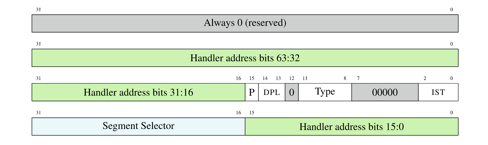
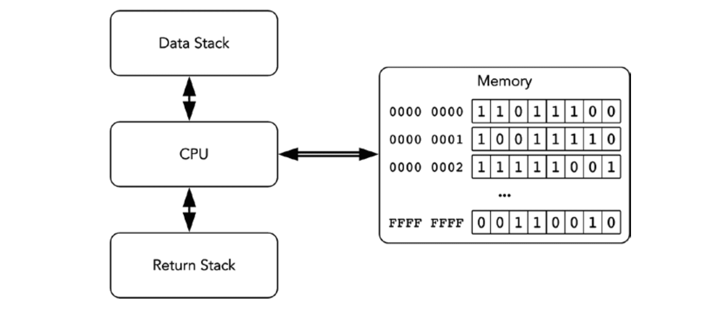
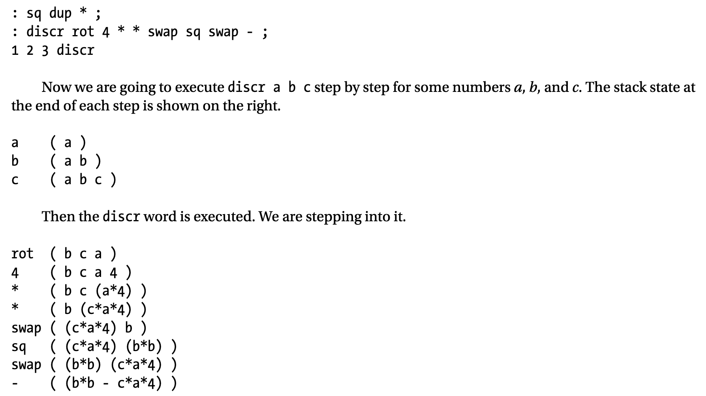
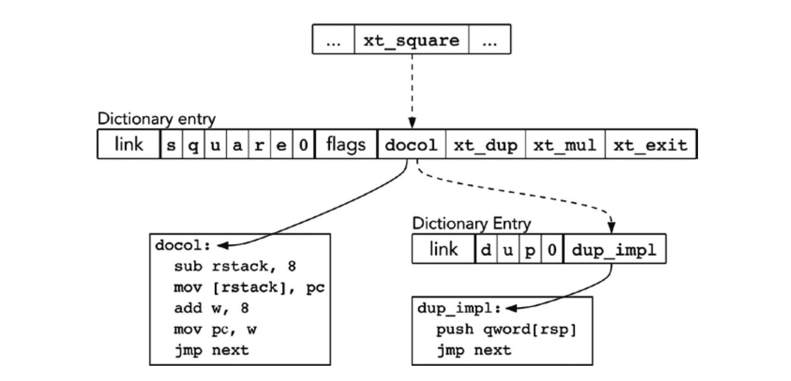
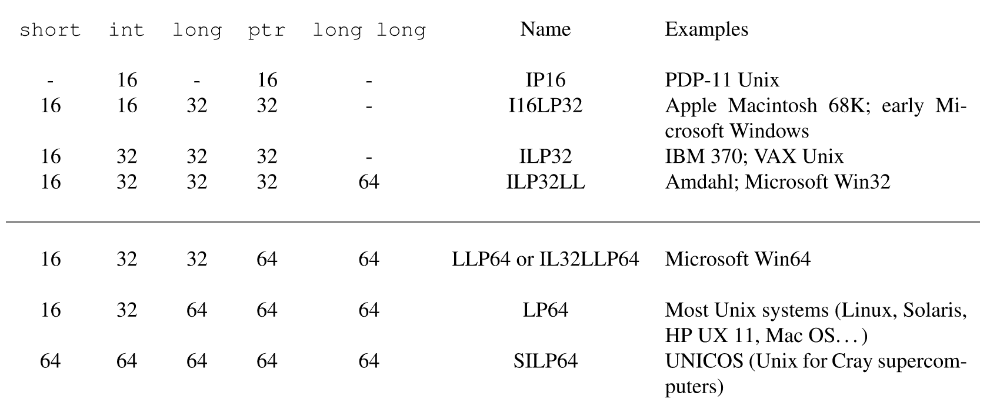

<!DOCTYPE html><html lang="en-us"><head><meta charset="UTF-8"><meta http-equiv="X-UA-Compatible" content="IE=edge,chrome=1"><title>《Low-Level Programming》读书笔记（第 5-13 章） | 曜彤.手记</title><meta name="description" content="内容太多，所以分成多篇来记录了，书接上文。"><meta name="generator" content="曜彤.手记"><meta name="about" content="[object Object]"><meta name="keywords" content="博客, C++, C, Rust, Web, Java, IT, 编程, 开发, Android, Python, MySQL, 科技, 黑客, 技术, Javascript, 云, 大数据, 计算, 机器学习, AI, 人工智能, 创业, 产品, 公司, WebAssembly, Wasm"><meta name="HandheldFriendly" content="True"><meta name="MobileOptimized" content="320"><meta name="viewport" content="width=device-width,initial-scale=1.0,maximum-scale=1,user-scalable=0"><link rel="stylesheet" type="text/css" href="/styles/screen.css"><link rel="apple-touch-icon" sizes="57x57" href="/images/apple-touch-icon-57x57.jpg"><link rel="apple-touch-icon" sizes="60x60" href="/images/apple-touch-icon-60x60.jpg"><link rel="apple-touch-icon" sizes="72x72" href="/images/apple-touch-icon-72x72.jpg"><link rel="apple-touch-icon" sizes="76x76" href="/images/apple-touch-icon-76x76.jpg"><link rel="apple-touch-icon" sizes="114x114" href="/images/apple-touch-icon-114x114.jpg"><link rel="apple-touch-icon" sizes="120x120" href="/images/apple-touch-icon-120x120.jpg"><link rel="apple-touch-icon" sizes="144x144" href="/images/apple-touch-icon-144x144.jpg"><link rel="apple-touch-icon" sizes="152x152" href="/images/apple-touch-icon-152x152.jpg"><link rel="apple-touch-icon" sizes="196x196" href="/images/apple-touch-icon-196x196.jpg"><link rel="apple-touch-icon" sizes="310x310" href="/images/apple-touch-icon-310x310.jpg"><link href="/images/splash/iphone5_splash.png" media="(device-width: 320px) and (device-height: 568px) and (-webkit-device-pixel-ratio: 2)" rel="apple-touch-startup-image"><link href="/images/splash/iphone6_splash.png" media="(device-width: 375px) and (device-height: 667px) and (-webkit-device-pixel-ratio: 2)" rel="apple-touch-startup-image"><link href="/images/splash/iphoneplus_splash.png" media="(device-width: 621px) and (device-height: 1104px) and (-webkit-device-pixel-ratio: 3)" rel="apple-touch-startup-image"><link href="/images/splash/iphonex_splash.png" media="(device-width: 375px) and (device-height: 812px) and (-webkit-device-pixel-ratio: 3)" rel="apple-touch-startup-image"><link href="/images/splash/iphonexr_splash.png" media="(device-width: 414px) and (device-height: 896px) and (-webkit-device-pixel-ratio: 2)" rel="apple-touch-startup-image"><link href="/images/splash/iphonexsmax_splash.png" media="(device-width: 414px) and (device-height: 896px) and (-webkit-device-pixel-ratio: 3)" rel="apple-touch-startup-image"><link href="/images/splash/ipad_splash.png" media="(device-width: 768px) and (device-height: 1024px) and (-webkit-device-pixel-ratio: 2)" rel="apple-touch-startup-image"><link href="/images/splash/ipadpro1_splash.png" media="(device-width: 834px) and (device-height: 1112px) and (-webkit-device-pixel-ratio: 2)" rel="apple-touch-startup-image"><link href="/images/splash/ipadpro3_splash.png" media="(device-width: 834px) and (device-height: 1194px) and (-webkit-device-pixel-ratio: 2)" rel="apple-touch-startup-image"><link href="/images/splash/ipadpro2_splash.png" media="(device-width: 1024px) and (device-height: 1366px) and (-webkit-device-pixel-ratio: 2)" rel="apple-touch-startup-image"><link rel="icon" type="image/png" sizes="16x16" href="/images/favicon-16x16.png"><link rel="icon" type="image/png" sizes="32x32" href="/images/favicon-32x32.png"><link rel="icon" type="image/png" sizes="96x96" href="/images/favicon-96x96.png"><link rel="icon" type="image/png" sizes="128x128" href="/images/favicon-128.png"><link rel="icon" type="image/png" sizes="196x196" href="/images/favicon-196x196.png"><meta name="msapplication-TileColor" content="#FFFFFF"><meta name="msapplication-TileImage" content="mstile-144x144.png"><meta name="msapplication-square70x70logo" content="mstile-70x70.png"><meta name="msapplication-square150x150logo" content="mstile-150x150.png"><meta name="msapplication-wide310x150logo" content="mstile-310x150.png"><meta name="msapplication-square310x310logo" content="mstile-310x310.png"><meta name="msapplication-square310x310logo" content="mstile-310x310.png"><link rel="manifest" href="/manifest.webmanifest"><link rel="alternate" type="application/atom+xml" title="Atom 0.3" href="/atom.xml"><link rel="stylesheet" href="/css/prism-okaidia.css" type="text/css">
<link rel="stylesheet" href="/css/prism-line-numbers.css" type="text/css"></head><body itemscope itemtype="https://schema.org/WebPage"><div class="canvas-containter"><span>X</span></div><header itemscope itemtype="https://schema.org/WPHeader"><div class="logo"></div><h1 class="title"><a href="/" alt="曜彤.手记" title="曜彤.手记" itemprop="headline">曜彤.手记</a><a title="Atom 0.3" target="__blank" href="/atom.xml" class="rss"></a></h1><p itemprop="description" class="description">随记，关于互联网技术、产品与创业</p><nav itemscope itemtype="https://schema.org/SiteNavigationElement"><ul><li itemprop="name" class="menu-item"><a href="/ " alt="首页" title="首页" itemprop="url">首页</a></li><li itemprop="name" class="menu-item"><a href="/articles" alt="文章" title="文章" itemprop="url">文章</a></li><li itemprop="name" class="menu-item"><a href="/tags" alt="标签" title="标签" itemprop="url">标签</a></li><li itemprop="name" class="menu-item"><a href="/about" alt="关于" title="关于" itemprop="url">关于</a></li></ul></nav><div class="space"></div></header><main itemscope itemtype="https://schema.org/Blog"><script src="https://shadow.elemecdn.com/npm/zoomage.js@latest/dist/zoomage.min.js" type="text/javascript"></script><script src="https://shadow.elemecdn.com/npm/axios@0.18.0/dist/axios.min.js" type="text/javascript"></script><script src="/scripts/post.js" type="text/javascript"></script><div class="touch-top"><span></span></div><article post-id="《Low-Level Programming》读书笔记（第 5-13 章）" class="full"><h1 itemprop="headline" class="align-center">《Low-Level Programming》读书笔记（第 5-13 章）</h1><div class="content"><div class="article-meta"><span class="post-meta"><br>Created on<time itemprop="dateCreated" datetime="2020-06-28T16:28:35.000Z"> 2020 / 06 / 29, 00:28:35</time></span><span class="page-tag-anchor"><a href="/tags/汇编" itemprop="url">#汇编</a>&nbsp;&nbsp;</span></div><p>内容太多，所以分成多篇来记录了，书接上文。</p>
<h3 id="Chapter-5：编译管线"><a href="#Chapter-5：编译管线" class="headerlink" title="Chapter 5：编译管线"></a>Chapter 5：编译管线</h3><ol start="44">
<li><span class="pn">Page 64</span>NASM 基本宏编译（属于“预处理阶段”，仅做简单的“宏展开”和“宏符号替换”而不考虑编程语言的语法规则）：</li>
</ol>
<p><strong>常量宏替换</strong>（%define）：</p>
<pre class="line-numbers language-nasm"><code class="language-nasm"><span class="token operator">%</span>define COUNT <span class="token number">42</span>
mov <span class="token register variable">rax</span>, COUNT  <span class="token comment" spellcheck="true">; macro -> macro expansion;</span>
<span class="token comment" spellcheck="true">; mov rax, 42</span>
<span aria-hidden="true" class="line-numbers-rows"><span></span><span></span><span></span></span></code></pre>
<p><strong>带参数的宏替换</strong>（%macro / %endmacro）：</p>
<pre class="line-numbers language-nasm"><code class="language-nasm"><span class="token operator">%</span>macro print <span class="token number">2</span>  <span class="token comment" spellcheck="true">; macro, taking 2 parameters;</span>
mov <span class="token register variable">rsi</span>, <span class="token operator">%</span><span class="token number">1</span>  <span class="token comment" spellcheck="true">; use the 1st parameter;</span>
mov <span class="token register variable">rax</span>, <span class="token number">1</span>
mov <span class="token register variable">rdi</span>, <span class="token number">1</span>
mov <span class="token register variable">rdx</span>, <span class="token operator">%</span><span class="token number">2</span>  <span class="token comment" spellcheck="true">; use the 2nd parameter;</span>
syscall
<span class="token operator">%</span>endmacro

<span class="token keyword">section .rodata</span>
<span class="token label function">v:</span>
    db <span class="token string">'YHSPY'</span>, <span class="token number">0</span>

<span class="token keyword">global _start</span>
<span class="token keyword">section .text</span>
<span class="token label function">_start:</span>
    print v, <span class="token number">6</span>  <span class="token comment" spellcheck="true">; macro -> macro expansion;</span>
    mov <span class="token register variable">rax</span>, <span class="token number">60</span>
    xor <span class="token register variable">rdi</span>, <span class="token register variable">rdi</span>
    syscall
<span aria-hidden="true" class="line-numbers-rows"><span></span><span></span><span></span><span></span><span></span><span></span><span></span><span></span><span></span><span></span><span></span><span></span><span></span><span></span><span></span><span></span><span></span><span></span><span></span></span></code></pre>
<ol start="45">
<li><span class="pn">Page 66</span>NASM 条件宏编译：</li>
</ol>
<ul>
<li><strong>简单条件编译</strong>（%if / %elif / %else / %endif）：</li>
</ul>
<pre class="line-numbers language-nasm"><code class="language-nasm"><span class="token operator">%</span>define FLAG <span class="token number">1</span>
<span class="token keyword">global _start</span>
<span class="token keyword">section .text</span>
<span class="token label function">_start:</span>
<span class="token operator">%</span>if FLAG <span class="token operator">=</span><span class="token operator">=</span> <span class="token number">1</span>  <span class="token comment" spellcheck="true">; macro -> macro expansion;</span>
    mov <span class="token register variable">rdi</span>, <span class="token number">1</span>
<span class="token operator">%</span>elif FLAG <span class="token operator">=</span><span class="token operator">=</span> <span class="token number">2</span>
    mov <span class="token register variable">rdi</span>, <span class="token number">2</span>
<span class="token operator">%</span>else 
    xor <span class="token register variable">rdi</span>, <span class="token register variable">rax</span>
<span class="token operator">%</span>endif
    mov <span class="token register variable">rax</span>, <span class="token number">60</span>
    syscall
<span aria-hidden="true" class="line-numbers-rows"><span></span><span></span><span></span><span></span><span></span><span></span><span></span><span></span><span></span><span></span><span></span><span></span><span></span></span></code></pre>
<ul>
<li><strong>基于定义的条件编译</strong>（%ifdef / %ifndef）：</li>
</ul>
<pre class="line-numbers language-nasm"><code class="language-nasm"><span class="token operator">%</span>define FLAG
<span class="token keyword">global _start</span>
<span class="token keyword">section .text</span>
<span class="token label function">_start:</span>
<span class="token operator">%</span>ifdef FLAG  <span class="token comment" spellcheck="true">; macro -> macro expansion;</span>
    mov <span class="token register variable">rdi</span>, <span class="token number">1</span>
<span class="token operator">%</span>else 
    xor <span class="token register variable">rdi</span>, <span class="token register variable">rax</span>
<span class="token operator">%</span>endif
    mov <span class="token register variable">rax</span>, <span class="token number">60</span>
    syscall
<span aria-hidden="true" class="line-numbers-rows"><span></span><span></span><span></span><span></span><span></span><span></span><span></span><span></span><span></span><span></span><span></span></span></code></pre>
<ul>
<li><strong>基于文本识别的条件编译</strong>（%ifidn / %ifidni）：</li>
</ul>
<pre class="line-numbers language-nasm"><code class="language-nasm"><span class="token operator">%</span>macro pushr <span class="token number">1</span>
<span class="token operator">%</span>ifidn <span class="token operator">%</span><span class="token number">1</span>, rflags  <span class="token comment" spellcheck="true">; test if texts are identical;</span>
    pushf
<span class="token operator">%</span>else
    push <span class="token operator">%</span><span class="token number">1</span>
<span class="token operator">%</span>endif
<span class="token operator">%</span>endmacro
<span class="token keyword">global _start</span>
<span class="token keyword">section .text</span>
<span class="token label function">_start:</span>
    pushr <span class="token register variable">rax</span>
    pushr rflags  <span class="token comment" spellcheck="true">; push lower 16 bits of EFLAGS;</span>
    xor <span class="token register variable">rdi</span>, <span class="token register variable">rdi</span>
    mov <span class="token register variable">rax</span>, <span class="token number">60</span>
    syscall
<span aria-hidden="true" class="line-numbers-rows"><span></span><span></span><span></span><span></span><span></span><span></span><span></span><span></span><span></span><span></span><span></span><span></span><span></span><span></span><span></span></span></code></pre>
<ul>
<li><strong>基于参数类型的条件编译</strong>（%ifid / %ifstr / %ifnum）：</li>
</ul>
<pre class="line-numbers language-nasm"><code class="language-nasm"><span class="token operator">%</span>macro print <span class="token number">1</span>
<span class="token operator">%</span>ifid <span class="token operator">%</span><span class="token number">1</span>  <span class="token comment" spellcheck="true">; test whether it's an identifier?</span>
    <span class="token operator">%</span>error <span class="token string">"String literals are not supported yet!"</span>  <span class="token comment" spellcheck="true">; throw an error;</span>
<span class="token operator">%</span>endif
<span class="token operator">%</span>ifnum <span class="token operator">%</span><span class="token number">1</span>  <span class="token comment" spellcheck="true">; test whether it's a number?</span>
    mov <span class="token register variable">rdi</span>, <span class="token number">2</span>
<span class="token operator">%</span>endif
<span class="token operator">%</span>ifstr  <span class="token comment" spellcheck="true">; test whether it's a string?</span>
    mov <span class="token register variable">rdi</span>, <span class="token number">3</span>
<span class="token operator">%</span>endif
<span class="token operator">%</span>endmacro
<span class="token keyword">global _start</span>
<span class="token keyword">section .text</span>
<span class="token label function">_start:</span>
    print <span class="token number">10</span>  <span class="token comment" spellcheck="true">; mov rdi, 2;</span>
    mov <span class="token register variable">rax</span>, <span class="token number">60</span>
    syscall
<span aria-hidden="true" class="line-numbers-rows"><span></span><span></span><span></span><span></span><span></span><span></span><span></span><span></span><span></span><span></span><span></span><span></span><span></span><span></span><span></span><span></span><span></span></span></code></pre>
<ol start="46">
<li><span class="pn">Page 69</span>NASM 下的<strong>宏定义求值规则</strong>：</li>
</ol>
<ul>
<li><strong>％define 表示延迟替换</strong>。如果当前宏所引用的其他宏被重新定义，则该宏可能会在实例化之间动态地更改其展开值；</li>
<li><strong>％xdefine 表示定义时执行替换</strong>。当前宏所引用的其他宏在定义后便直接与其绑定，即：无法动态地在实例之间更改宏展开值；</li>
<li><strong>％assign 类似于 ％xdefine，强制求值并进行替换</strong>。若宏计算结果不是数字值，则抛出错误；</li>
</ul>
<ol start="47">
<li><span class="pn">Page 71</span>NASM 宏重复结构：times 伪指令仅会在所有宏定义全部展开后才开始执行，因此无法用于重复使用宏定义，仅可用于重复指令执行。而我们可以使用 <strong>%rep</strong> / <strong>%endrep</strong> 宏结构来重复定义宏：</li>
</ol>
<pre class="line-numbers language-nasm"><code class="language-nasm"><span class="token operator">%</span>define v <span class="token number">0</span>
<span class="token operator">%</span>define c <span class="token number">1</span>
<span class="token operator">%</span>rep <span class="token number">10</span>
<span class="token operator">%</span>assign v v <span class="token operator">+</span> c  <span class="token comment" spellcheck="true">; v += c;</span>
<span class="token operator">%</span>assign c c <span class="token operator">+</span> <span class="token number">1</span>  <span class="token comment" spellcheck="true">; increase v by 1;</span>
<span class="token operator">%</span>endrep
<span class="token keyword">global _start</span>
<span class="token keyword">section .text</span>
<span class="token label function">_start:</span>
    mov <span class="token register variable">rdi</span>, v  <span class="token comment" spellcheck="true">; v &lt;- 55;</span>
    mov <span class="token register variable">rax</span>, <span class="token number">60</span>
    syscall
<span aria-hidden="true" class="line-numbers-rows"><span></span><span></span><span></span><span></span><span></span><span></span><span></span><span></span><span></span><span></span><span></span><span></span></span></code></pre>
<ul>
<li>在循环中我们可以使用 <strong>%exitrep</strong> 直接退出整个循环结构（类似 break）。</li>
</ul>
<ol start="48">
<li><span class="pn">Page 73</span>在宏定义中使用标签（%%&lt;label&gt;）：</li>
</ol>
<pre class="line-numbers language-nasm"><code class="language-nasm"><span class="token operator">%</span>macro foo <span class="token number">1</span>
    xor <span class="token register variable">rax</span>, <span class="token register variable">rax</span>
<span class="token operator">%</span><span class="token operator">%</span>start:
    cmp <span class="token register variable">rax</span>, <span class="token operator">%</span><span class="token number">1</span>
    je <span class="token operator">%</span><span class="token operator">%</span>end  <span class="token comment" spellcheck="true">; label name can be used with directives;</span>
    inc <span class="token register variable">rax</span>
    jmp <span class="token operator">%</span><span class="token operator">%</span>start
<span class="token operator">%</span><span class="token operator">%</span>end:
<span class="token operator">%</span>endmacro
<span class="token keyword">global _start</span>
<span class="token keyword">section .text</span>
<span class="token label function">_start:</span>
    foo <span class="token number">10</span>
    mov <span class="token register variable">rdi</span>, <span class="token register variable">rax</span>
    mov <span class="token register variable">rax</span>, <span class="token number">60</span>
    syscall
<span aria-hidden="true" class="line-numbers-rows"><span></span><span></span><span></span><span></span><span></span><span></span><span></span><span></span><span></span><span></span><span></span><span></span><span></span><span></span><span></span><span></span></span></code></pre>
<ol start="49">
<li><span class="pn">Page 77</span>相较于 readelf 命令，<strong>objdump 还支持对除 ELF 外的其他格式的分析</strong>，比如：ELF、COFF、MachO 甚至 Wasm（llvm-objdump）。</li>
<li><span class="pn">Page 79</span>以 <strong>Intel 指令集</strong>（而非 AT&amp;T）的语法形式展示反编译的代码结果：</li>
</ol>
<pre class="line-numbers language-bash"><code class="language-bash">objdump -D -M intel-mnemonic <span class="token operator">&lt;</span>file<span class="token operator">></span>
<span aria-hidden="true" class="line-numbers-rows"><span></span></span></code></pre>
<ol start="51">
<li><span class="pn">Page 80</span>NASM 下的<strong>静态链接</strong>：</li>
</ol>
<p>主文件：</p>
<pre class="line-numbers language-nasm"><code class="language-nasm"><span class="token keyword">extern count  </span><span class="token comment" spellcheck="true">; declare this as an external symbol;</span>

<span class="token keyword">global _start</span>
<span class="token keyword">section .text</span>
<span class="token label function">_start:</span>
    mov <span class="token register variable">rdi</span>, <span class="token operator">[</span>count<span class="token operator">]</span>
    mov <span class="token register variable">rax</span>, <span class="token number">60</span>
    syscall
<span aria-hidden="true" class="line-numbers-rows"><span></span><span></span><span></span><span></span><span></span><span></span><span></span><span></span></span></code></pre>
<p>模块文件：</p>
<pre class="line-numbers language-nasm"><code class="language-nasm"><span class="token keyword">global count  </span><span class="token comment" spellcheck="true">; declare this as a global symbol;</span>
<span class="token keyword">section .data</span>
<span class="token label function">count:</span>
    db <span class="token number">10</span>
<span aria-hidden="true" class="line-numbers-rows"><span></span><span></span><span></span><span></span></span></code></pre>
<ul>
<li><strong>只有 Global 的符号才能够跨模块共享使用</strong>。通常在 C/C++ 定义的非静态函数默认均为 Global 类型，而全局静态函数由于作用域仅限于当前的编译单元，因此为 Local 类型符号；</li>
</ul>
<ol start="52">
<li><span class="pn">Page 83</span>NASM 下的<strong>动态链接</strong>：</li>
</ol>
<p>主文件（main.asm）：</p>
<pre class="line-numbers language-nasm"><code class="language-nasm"><span class="token keyword">global _start</span>

<span class="token keyword">extern foo</span>

<span class="token keyword">section .text</span>
<span class="token label function">_start:</span>
    mov <span class="token register variable">rdi</span>, <span class="token number">10</span>
    call foo
    mov <span class="token register variable">rdi</span>, <span class="token register variable">rax</span>
    mov <span class="token register variable">rax</span>, <span class="token number">60</span>
    syscall
<span aria-hidden="true" class="line-numbers-rows"><span></span><span></span><span></span><span></span><span></span><span></span><span></span><span></span><span></span><span></span><span></span></span></code></pre>
<p>共享库文件（mod.asm）：</p>
<pre class="line-numbers language-nasm"><code class="language-nasm"><span class="token keyword">extern _GLOBAL_OFFSET_TABLE_  </span><span class="token comment" spellcheck="true">; PIC code;</span>
<span class="token keyword">global foo:function</span>

<span class="token keyword">section .rodata</span>
<span class="token label function">message:</span>
    db <span class="token string">'Shared object wrote this'</span>, <span class="token number">10</span>, <span class="token number">0</span>

<span class="token keyword">section .text</span>
<span class="token label function">foo:</span>
    mov <span class="token register variable">rax</span>, <span class="token number">1</span>
    mov <span class="token register variable">rdi</span>, <span class="token number">1</span>
    mov <span class="token register variable">rsi</span>, message
    mov <span class="token register variable">rdx</span>, <span class="token number">14</span>
    syscall
    ret
<span aria-hidden="true" class="line-numbers-rows"><span></span><span></span><span></span><span></span><span></span><span></span><span></span><span></span><span></span><span></span><span></span><span></span><span></span><span></span><span></span></span></code></pre>
<ul>
<li>在最后一步链接生成 ELF 可执行文件时一定要<strong>指定使用的动态链接器</strong>：</li>
</ul>
<pre class="line-numbers language-bash"><code class="language-bash">ld -o main main.o ./mod.so --dynamic-linker<span class="token operator">=</span>/lib64/ld-linux-x86-64.so.2
<span aria-hidden="true" class="line-numbers-rows"><span></span></span></code></pre>
<ol start="53">
<li><span class="pn">Page 87</span>NASM 汇编实现的一个简易 <strong>Dictionary</strong>（基于 Linked List）：基本原理是使用宏自动生成的标签（%%lw）来分割每一个 Node；每个 Node 包含两部分：一部分为指向下一个节点的“指针”，另一部分为 Key-Value 结构，保存了当前节点的键值对。</li>
</ol>
<pre class="line-numbers language-nasm"><code class="language-nasm"><span class="token operator">%</span>define lw <span class="token number">0</span>

<span class="token operator">%</span>macro colon <span class="token number">2</span>
<span class="token operator">%</span><span class="token operator">%</span>lw: dq lw 
db <span class="token operator">%</span><span class="token number">1</span>, <span class="token number">0</span>
xt_ <span class="token operator">%</span><span class="token operator">+</span> <span class="token operator">%</span><span class="token number">2</span>:  <span class="token comment" spellcheck="true">; use '%+' to combine macros;</span>

<span class="token operator">%</span>define lw <span class="token operator">%</span><span class="token operator">%</span>lw  <span class="token comment" spellcheck="true">; use address of the label;</span>
<span class="token operator">%</span>endmacro

<span class="token keyword">global _start</span>
<span class="token keyword">section .rodata</span>
colon <span class="token string">"tail"</span>, tail
db <span class="token string">"tail"</span>, <span class="token number">0</span>

colon <span class="token string">"head"</span>, head
db <span class="token string">"head"</span>, <span class="token number">0</span>

<span class="token keyword">section .text</span>
<span class="token label function">_start:</span>
    mov <span class="token register variable">rax</span>, lw
    <span class="token comment" spellcheck="true">; save next node addr (first 8 bytes) to rbx;</span>
    mov <span class="token register variable">rbx</span>, <span class="token operator">[</span><span class="token register variable">rax</span><span class="token operator">]</span>  
    add <span class="token register variable">rax</span>, <span class="token number">8</span>

    <span class="token comment" spellcheck="true">; print the key of the first node;</span>
    mov <span class="token register variable">rsi</span>, <span class="token register variable">rax</span>
    mov <span class="token register variable">rax</span>, <span class="token number">1</span>
    mov <span class="token register variable">rdi</span>, <span class="token number">1</span>
    mov <span class="token register variable">rdx</span>, <span class="token number">4</span>
    syscall
    
    <span class="token comment" spellcheck="true">; start from that addr (bypass the first 8 bytes);</span>
    add <span class="token register variable">rbx</span>, <span class="token number">8</span>  
    mov <span class="token register variable">rsi</span>, <span class="token register variable">rbx</span>
    mov <span class="token register variable">rax</span>, <span class="token number">1</span>
    mov <span class="token register variable">rdi</span>, <span class="token number">1</span>
    mov <span class="token register variable">rdx</span>, <span class="token number">4</span>
    syscall

    xor <span class="token register variable">rdi</span>, <span class="token register variable">rdi</span>
    mov <span class="token register variable">rax</span>, <span class="token number">60</span>
    syscall
<span aria-hidden="true" class="line-numbers-rows"><span></span><span></span><span></span><span></span><span></span><span></span><span></span><span></span><span></span><span></span><span></span><span></span><span></span><span></span><span></span><span></span><span></span><span></span><span></span><span></span><span></span><span></span><span></span><span></span><span></span><span></span><span></span><span></span><span></span><span></span><span></span><span></span><span></span><span></span><span></span><span></span><span></span><span></span><span></span><span></span><span></span><span></span><span></span></span></code></pre>
<ul>
<li>用于串联两条宏指令：“<b>％+</b>”；</li>
</ul>
<h3 id="Chapter-6：中断和系统调用"><a href="#Chapter-6：中断和系统调用" class="headerlink" title="Chapter 6：中断和系统调用"></a>Chapter 6：中断和系统调用</h3><ol start="54">
<li><span class="pn">Page 91</span>应用程序有两种可以访问 IO 端口的方式：</li>
</ol>
<ul>
<li>通过指令 <strong>in</strong> 和 <strong>out</strong> 来访问分离的 IO 专用地址空间（<strong>0x0 - 0xffffh</strong>）。这两个指令可用来在 eax 与 IO 端口之间交换数据；</li>
<li>通过映射到进程虚拟地址空间的 IO 专用地址来访问 IO 设备；</li>
</ul>
<ol start="55">
<li><span class="pn">Page 94</span>每一个中断请求都带有一个 ID，以用于在内存中的“中断描述表（IDT）”查询对应的中断类型和处理程序地址。中断描述表的位置及大小信息被记录在 <strong>idtr</strong> 寄存器（64 位）中。其中<strong>低 16 位记录了大小信息</strong>；<strong>高 48 位记录了 IDT 的地址信息</strong>。</li>
<li><span class="pn">Page 94</span>IDT 中的每一个表项占据 16 个字节，大体结构如下：</li>
</ol>
<p></p>
<ul>
<li>其中当前的特权等级需要小于等于 DPL 字段的值，以使用 int 来调用该中断处理程序；</li>
<li><strong>前 30 个中断号被保留</strong>，CPU 会将它们用于处理其内部事件，例如无效的指令编码。</li>
</ul>
<ol start="57">
<li><span class="pn">Page 96</span>当第 n 号中断发生时，从程序员的角度将执行以下操作：</li>
</ol>
<ul>
<li>从 <strong>idtr</strong> 寄存器中获得 IDT 的地址；</li>
<li>对应的中断描述符位于 IDT 起始偏移 16 x n 字节处；</li>
<li>段选择器和中断处理程序地址从 IDT 对应条目加载到 cs 和 rip 寄存器中，可能会同时更改特权级别。旧的 ss \ rsp \ rflags \ cs 和 rip 被存储到栈中；</li>
<li>对于某些中断，一个错误代码会被推入处理程序栈的顶部，以提供有关中断原因的其他信息；</li>
<li>如果中断描述符的类型字段将其定义为 Interrupt Gate，则清除中断标志 IF。但对于 Trap Gate 来说，该标志不会被自动清除，以允许嵌套的中断处理过程；</li>
</ul>
<ol start="58">
<li><span class="pn">Page 97</span>Intel64 使用新的 <strong>syscall</strong> / <strong>sysret</strong> 指令来进行系统调用，相比于之前的 int 指令，其优势在于：</li>
</ol>
<ul>
<li>权限转移只能发生在 ring0 和 ring3 之间；</li>
<li>所有的系统调用都只有一个代码入口点，而非传统 <code>int 0x80</code> 的方式；</li>
<li> 通用寄存器在系统调用期间被隐式使用（如 rcx 用于存储 rip 寄存器的内容；r11 用于存储 rflags 的内容）；</li>
</ul>
<h3 id="Chapter-7：计算模型"><a href="#Chapter-7：计算模型" class="headerlink" title="Chapter 7：计算模型"></a>Chapter 7：计算模型</h3><p>（“有限自动机”的部分略。这部分内容可以直接参考斯坦福的 <strong>CS143</strong>。） </p>
<ol start="59">
<li><span class="pn">Page 110</span>Forth 抽象机：<strong>处理器</strong> + <strong>两个分别用于存储数据和返回地址的栈</strong> + <strong>线性内存</strong>；</li>
</ol>
<p></p>
<p>Forth 程序按“<strong>字</strong>”为单位以空格或换行符进行分割，数字值表示将该数据推入栈中。有三种类型的“字”：Integer（数据）、Native（操作）、Colon（定义其他字）。<strong>符号 “:” 用于定义新的字</strong>。一个基本的用于求一元二次方程判别式的 Forth 程序的栈变化图（Stack Diagram）如下：</p>
<p></p>
<ol start="60">
<li><span class="pn">Page 113</span>基于 <strong>ITC</strong>（Indirect Threaded Code，二级指针）方式实现的 Forth Machine 基本字调用结构：</li>
</ol>
<p></p>
<ul>
<li>pc 指向了每一个 Native 对应的 <strong>ET</strong>（Execution Token，汇编实现部分）；而每一个 Native 在实现的结尾处都通过调用 next 子过程来调整 pc 的位置，并将执行过程移动到下一个 ET 处；</li>
<li>Colon 其实相当于<strong>子函数调用</strong>的过程，在调用之前需要先保存当前 pc 的值，然后在调用结束后把 pc 值重置；</li>
</ul>
<p>一个简单实现：<u><strong><a target="_blank" rel="noopener" href="https://github.com/Becavalier/Forthress">Becavalier/Forthress</a></strong></u>。</p>
<h3 id="Chapter-8：C-语言"><a href="#Chapter-8：C-语言" class="headerlink" title="Chapter 8：C 语言"></a>Chapter 8：C 语言</h3><ol start="61">
<li><span class="pn">Page 130</span><b>-Wall</b>，可用于让编译器显示所有警告信息。</li>
<li><span class="pn">Page 131</span>在 C 中，<strong>全局变量只能使用编译时常量来赋值</strong>；</li>
<li><span class="pn">Page 131</span>在大多数去情况下尽量使用 <strong>puts</strong> 来代替 <strong>printf</strong> 输出字符串。相较于 printf，puts 速度更快且没有安全漏洞。</li>
<li><span class="pn">Page 133</span><strong>静态类型</strong>意味着可以在编译时知道所有变量的具体类型；<strong>弱类型</strong>意味着有时一些数据值会被隐式地转换为其他类型。</li>
<li><span class="pn">Page 136</span>C 中的 <code>goto</code> 语句可用于实现“有限状态机”。</li>
</ol>
<h3 id="Chapter-9：C-类型系统"><a href="#Chapter-9：C-类型系统" class="headerlink" title="Chapter 9：C 类型系统"></a>Chapter 9：C 类型系统</h3><ol start="66">
<li><span class="pn">Page 148</span>int 的大小原本被设计为等同于机器字（word）的大小。直到 32bit 到 64bit 的过渡时期，为了不破坏原有应用的可用性，int 仍被保持为默认的 4 字节大小。</li>
<li><span class="pn">Page 149</span><strong>long double 类型的值至少与 double 类型要保持一致</strong>，但不同编译器对待该类型的实际尺寸可能不一样。在某些 X86-32 芯片中，该尺寸可能为 80bit。</li>
<li><span class="pn">Page 154</span>C 中没有“数组引用”做函数参数的概念，因此在为以普通数组做参数的函数传递实参时，编译器会<strong>将数组退化（decay）为指针，从而丢失长度信息</strong>。而“数组引用”做参数时会保留参数的长度信息和数组类型。C99 引入了新的语法（<strong>静态数组参数</strong>），可以向编译器保证被传入的实参数组至少有一定数量的元素，以便以进行某些优化。</li>
</ol>
<pre class="line-numbers language-c"><code class="language-c"><span class="token macro property">#<span class="token directive keyword">define</span> ARR_SIZE 10</span>
<span class="token keyword">void</span> <span class="token function">foo</span><span class="token punctuation">(</span><span class="token keyword">int</span> arr<span class="token punctuation">[</span><span class="token keyword">static</span> ARR_SIZE<span class="token punctuation">]</span><span class="token punctuation">)</span> <span class="token punctuation">{</span><span class="token punctuation">}</span>  <span class="token comment" spellcheck="true">// a promise to compiler;</span>

<span class="token keyword">int</span> <span class="token function">main</span><span class="token punctuation">(</span><span class="token keyword">int</span> argc<span class="token punctuation">,</span> <span class="token keyword">char</span><span class="token operator">*</span><span class="token operator">*</span> argv<span class="token punctuation">)</span> <span class="token punctuation">{</span>
  <span class="token keyword">int</span> arr<span class="token punctuation">[</span>ARR_SIZE <span class="token operator">+</span> <span class="token number">1</span><span class="token punctuation">]</span> <span class="token operator">=</span> <span class="token punctuation">{</span><span class="token punctuation">}</span><span class="token punctuation">;</span>
  <span class="token function">foo</span><span class="token punctuation">(</span>arr<span class="token punctuation">)</span><span class="token punctuation">;</span>
  <span class="token keyword">return</span> <span class="token number">0</span><span class="token punctuation">;</span>
<span class="token punctuation">}</span>
<span aria-hidden="true" class="line-numbers-rows"><span></span><span></span><span></span><span></span><span></span><span></span><span></span><span></span></span></code></pre>
<ol start="69">
<li><span class="pn">Page 154</span>指派初始化（C++20 里也开始支持）：</li>
</ol>
<pre class="line-numbers language-c"><code class="language-c"><span class="token macro property">#<span class="token directive keyword">define</span> ARR_SIZE 10</span>
<span class="token keyword">int</span> <span class="token function">main</span><span class="token punctuation">(</span><span class="token keyword">int</span> argc<span class="token punctuation">,</span> <span class="token keyword">char</span><span class="token operator">*</span><span class="token operator">*</span> argv<span class="token punctuation">)</span> <span class="token punctuation">{</span>
  <span class="token keyword">int</span> arr<span class="token punctuation">[</span>ARR_SIZE<span class="token punctuation">]</span> <span class="token operator">=</span> <span class="token punctuation">{</span> <span class="token punctuation">[</span><span class="token number">5</span><span class="token punctuation">]</span> <span class="token operator">=</span> <span class="token number">29</span><span class="token punctuation">,</span> <span class="token punctuation">[</span><span class="token number">1</span><span class="token punctuation">]</span> <span class="token operator">=</span> <span class="token number">10</span><span class="token punctuation">}</span><span class="token punctuation">;</span>
  <span class="token keyword">return</span> <span class="token number">0</span><span class="token punctuation">;</span>
<span class="token punctuation">}</span>
<span aria-hidden="true" class="line-numbers-rows"><span></span><span></span><span></span><span></span><span></span></span></code></pre>
<ol start="70">
<li><span class="pn">Page 156</span>一般情况下，<strong>请使用 size_t 类型来作为数组的索引下标</strong>。标准规定，数组类型的可索引大小由 size_t 的大小决定。</li>
<li><span class="pn">Page 156</span>C 标准中<strong>没有规定对负数进行位移操作时的具体实现规则</strong>。</li>
<li><span class="pn">Page 157</span><strong>sizeof 不是函数，而是运算符</strong>。对应的表达式会在编译时被求值。一个最多的应用场景是将其用于对数组大小的求值。</li>
<li><span class="pn">Page 161</span>在使用 typedef 定义新类型时，尽量<strong>不要把多个类型混合在一起</strong>，比如不要定义新类型为一个函数指针（函数类型 + 指针类型）。指针类型可以在表达式中单独提出来，这样易于代码的理解，提高了可读性。</li>
<li><span class="pn">Page 166</span>一个重构前后的代码示例（很适合作为面试题）：</li>
</ol>
<p>重构前：</p>
<pre class="line-numbers language-c"><code class="language-c"><span class="token macro property">#<span class="token directive keyword">include</span> <span class="token string">&lt;stdio.h></span></span>
<span class="token keyword">int</span> array<span class="token punctuation">[</span><span class="token punctuation">]</span> <span class="token operator">=</span> <span class="token punctuation">{</span><span class="token number">1</span><span class="token punctuation">,</span> <span class="token number">2</span><span class="token punctuation">,</span> <span class="token number">3</span><span class="token punctuation">,</span> <span class="token number">4</span><span class="token punctuation">}</span><span class="token punctuation">;</span>
<span class="token keyword">int</span> <span class="token function">main</span><span class="token punctuation">(</span><span class="token keyword">int</span> argc<span class="token punctuation">,</span> <span class="token keyword">char</span><span class="token operator">*</span><span class="token operator">*</span> argv<span class="token punctuation">)</span> <span class="token punctuation">{</span>
  <span class="token keyword">int</span> i<span class="token punctuation">;</span>
  <span class="token keyword">int</span> sum<span class="token punctuation">;</span>
  <span class="token keyword">for</span> <span class="token punctuation">(</span>i <span class="token operator">=</span> <span class="token number">0</span><span class="token punctuation">;</span> i <span class="token operator">&lt;</span> <span class="token number">5</span><span class="token punctuation">;</span> i<span class="token operator">++</span><span class="token punctuation">)</span>
    sum <span class="token operator">=</span> sum <span class="token operator">+</span> array<span class="token punctuation">[</span>i<span class="token punctuation">]</span><span class="token punctuation">;</span>
  <span class="token function">printf</span><span class="token punctuation">(</span><span class="token string">"The sum is: %d\n"</span><span class="token punctuation">,</span> sum<span class="token punctuation">)</span><span class="token punctuation">;</span>
  <span class="token keyword">return</span> <span class="token number">0</span><span class="token punctuation">;</span>
<span class="token punctuation">}</span>
<span aria-hidden="true" class="line-numbers-rows"><span></span><span></span><span></span><span></span><span></span><span></span><span></span><span></span><span></span><span></span></span></code></pre>
<p>重构后：</p>
<pre class="line-numbers language-c"><code class="language-c"><span class="token macro property">#<span class="token directive keyword">include</span> <span class="token string">&lt;stdio.h></span></span>
<span class="token keyword">const</span> <span class="token keyword">int</span> g_array<span class="token punctuation">[</span><span class="token punctuation">]</span> <span class="token operator">=</span> <span class="token punctuation">{</span><span class="token number">1</span><span class="token punctuation">,</span> <span class="token number">2</span><span class="token punctuation">,</span> <span class="token number">3</span><span class="token punctuation">,</span> <span class="token number">4</span><span class="token punctuation">}</span><span class="token punctuation">;</span>  <span class="token comment" spellcheck="true">// 变量带有语义；</span>
<span class="token comment" spellcheck="true">// 提取通用部分；</span>
<span class="token keyword">int</span> <span class="token function">array_sum</span><span class="token punctuation">(</span><span class="token keyword">const</span> <span class="token keyword">int</span><span class="token operator">*</span> array<span class="token punctuation">,</span> size_t count<span class="token punctuation">)</span> <span class="token punctuation">{</span>  <span class="token comment" spellcheck="true">// 声明不可变变量；</span>
  <span class="token keyword">if</span> <span class="token punctuation">(</span>array <span class="token operator">==</span> <span class="token constant">NULL</span><span class="token punctuation">)</span> <span class="token punctuation">{</span>  <span class="token comment" spellcheck="true">// 判断异常值；</span>
    <span class="token keyword">return</span> <span class="token operator">-</span><span class="token number">1</span><span class="token punctuation">;</span>
  <span class="token punctuation">}</span>
  <span class="token keyword">int</span> sum <span class="token operator">=</span> <span class="token number">0</span><span class="token punctuation">;</span>
  <span class="token keyword">for</span> <span class="token punctuation">(</span>size_t i <span class="token operator">=</span> <span class="token number">0</span><span class="token punctuation">;</span> i <span class="token operator">&lt;</span> count<span class="token punctuation">;</span> <span class="token operator">++</span>i<span class="token punctuation">)</span> <span class="token punctuation">{</span>  <span class="token comment" spellcheck="true">// 限制局部变量的使用范围；</span>
    sum <span class="token operator">+</span><span class="token operator">=</span> array<span class="token punctuation">[</span>i<span class="token punctuation">]</span><span class="token punctuation">;</span>  <span class="token comment" spellcheck="true">// 符合运算符的性能提升（一步好于多步，类似 super-instruction）；</span>
  <span class="token punctuation">}</span>  <span class="token comment" spellcheck="true">// 括号增强可维护性；</span>
  <span class="token keyword">return</span> sum<span class="token punctuation">;</span>
<span class="token punctuation">}</span>
<span class="token keyword">int</span> <span class="token function">main</span><span class="token punctuation">(</span><span class="token keyword">int</span> argc<span class="token punctuation">,</span> <span class="token keyword">char</span><span class="token operator">*</span><span class="token operator">*</span> argv<span class="token punctuation">)</span> <span class="token punctuation">{</span>
  <span class="token function">printf</span><span class="token punctuation">(</span><span class="token string">"The sum is: %d\n"</span><span class="token punctuation">,</span> <span class="token function">array_sum</span><span class="token punctuation">(</span>g_array<span class="token punctuation">,</span> <span class="token keyword">sizeof</span><span class="token punctuation">(</span>g_array<span class="token punctuation">)</span> <span class="token operator">/</span> <span class="token keyword">sizeof</span><span class="token punctuation">(</span><span class="token keyword">int</span><span class="token punctuation">)</span><span class="token punctuation">)</span><span class="token punctuation">)</span><span class="token punctuation">;</span>
  <span class="token keyword">return</span> <span class="token number">0</span><span class="token punctuation">;</span>
<span class="token punctuation">}</span>
<span aria-hidden="true" class="line-numbers-rows"><span></span><span></span><span></span><span></span><span></span><span></span><span></span><span></span><span></span><span></span><span></span><span></span><span></span><span></span><span></span><span></span><span></span></span></code></pre>
<ol start="75">
<li><span class="pn">Page 168</span>C 中的结构体在使用时需要配合 “struct” 关键字。如下，即 “struct pair” 整体才是一个类型。编译器会通过判断是否带有 “struct” 关键字来推断引用变量的类型是结构体还是其他符号。</li>
</ol>
<pre class="line-numbers language-c"><code class="language-c"><span class="token macro property">#<span class="token directive keyword">include</span> <span class="token string">&lt;stdio.h></span></span>
<span class="token keyword">struct</span> pair <span class="token punctuation">{</span> <span class="token keyword">int</span> x<span class="token punctuation">;</span> <span class="token keyword">int</span> y<span class="token punctuation">;</span> <span class="token punctuation">}</span><span class="token punctuation">;</span>
<span class="token keyword">int</span> <span class="token function">main</span><span class="token punctuation">(</span><span class="token keyword">int</span> argc<span class="token punctuation">,</span> <span class="token keyword">char</span><span class="token operator">*</span><span class="token operator">*</span> argv<span class="token punctuation">)</span> <span class="token punctuation">{</span>
  <span class="token keyword">struct</span> pair p <span class="token operator">=</span> <span class="token punctuation">{</span> <span class="token punctuation">.</span>x <span class="token operator">=</span> <span class="token number">10</span> <span class="token punctuation">}</span><span class="token punctuation">;</span>  <span class="token comment" spellcheck="true">// should be used by "struct pair".</span>
  <span class="token keyword">int</span> pair <span class="token operator">=</span> <span class="token number">10</span><span class="token punctuation">;</span>
  <span class="token keyword">return</span> <span class="token number">0</span><span class="token punctuation">;</span>
<span class="token punctuation">}</span>
<span aria-hidden="true" class="line-numbers-rows"><span></span><span></span><span></span><span></span><span></span><span></span><span></span></span></code></pre>
<ol start="76">
<li><span class="pn">Page 170</span>C 下，Union 的一种常见的使用方式：</li>
</ol>
<pre class="line-numbers language-c"><code class="language-c"><span class="token macro property">#<span class="token directive keyword">include</span> <span class="token string">&lt;stdio.h></span></span>
<span class="token keyword">union</span> pixel <span class="token punctuation">{</span>
  <span class="token keyword">struct</span> <span class="token punctuation">{</span> <span class="token keyword">char</span> a<span class="token punctuation">,</span> b<span class="token punctuation">,</span> c<span class="token punctuation">;</span> <span class="token punctuation">}</span><span class="token punctuation">;</span>
  <span class="token keyword">char</span> at<span class="token punctuation">[</span><span class="token number">3</span><span class="token punctuation">]</span><span class="token punctuation">;</span>
<span class="token punctuation">}</span><span class="token punctuation">;</span>
<span class="token keyword">int</span> <span class="token function">main</span><span class="token punctuation">(</span><span class="token keyword">int</span> argc<span class="token punctuation">,</span> <span class="token keyword">char</span><span class="token operator">*</span><span class="token operator">*</span> argv<span class="token punctuation">)</span> <span class="token punctuation">{</span>
  <span class="token keyword">union</span> pixel p <span class="token operator">=</span> <span class="token punctuation">{</span><span class="token string">'a'</span><span class="token punctuation">,</span> <span class="token string">'b'</span><span class="token punctuation">,</span> <span class="token string">'c'</span> <span class="token punctuation">}</span><span class="token punctuation">;</span>
  <span class="token function">printf</span><span class="token punctuation">(</span><span class="token string">"%c\n"</span><span class="token punctuation">,</span> p<span class="token punctuation">.</span>at<span class="token punctuation">[</span><span class="token number">1</span><span class="token punctuation">]</span><span class="token punctuation">)</span><span class="token punctuation">;</span>  <span class="token comment" spellcheck="true">// 'c'.</span>
  <span class="token keyword">return</span> <span class="token number">0</span><span class="token punctuation">;</span>
<span class="token punctuation">}</span>
<span aria-hidden="true" class="line-numbers-rows"><span></span><span></span><span></span><span></span><span></span><span></span><span></span><span></span><span></span><span></span></span></code></pre>
<ol start="77">
<li><span class="pn">Page 173</span>类似 OCaml 的静态强类型语言中，<strong>针对两整数运算（+）和两浮点数运算（+.）分别有着不同的运算符</strong>。</li>
<li><span class="pn">Page 178</span>C11 中新增的宏 <strong>_Generic</strong> 可以在编译时动态选择符合条件的子句（<strong>可用于模拟 C++ 中的函数重载</strong>）：</li>
</ol>
<pre class="line-numbers language-c"><code class="language-c"><span class="token macro property">#<span class="token directive keyword">include</span> <span class="token string">&lt;stdio.h></span></span>

<span class="token macro property">#<span class="token directive keyword">define</span> print_fmt(x) (_Generic((x), \
          int: "%d", \
          double: "%f", \
          default: "%x"))</span>
<span class="token macro property">#<span class="token directive keyword">define</span> print(x) printf(print_fmt(x), x); puts("");</span>
<span class="token keyword">int</span> <span class="token function">main</span><span class="token punctuation">(</span><span class="token keyword">int</span> argc<span class="token punctuation">,</span> <span class="token keyword">char</span><span class="token operator">*</span><span class="token operator">*</span> argv<span class="token punctuation">)</span> <span class="token punctuation">{</span>
  <span class="token keyword">int</span> x <span class="token operator">=</span> <span class="token number">101</span><span class="token punctuation">;</span>
  <span class="token keyword">double</span> y <span class="token operator">=</span> <span class="token number">10.1</span><span class="token punctuation">;</span>
  <span class="token function">print</span><span class="token punctuation">(</span>x<span class="token punctuation">)</span><span class="token punctuation">;</span>
  <span class="token function">print</span><span class="token punctuation">(</span>y<span class="token punctuation">)</span><span class="token punctuation">;</span>
  <span class="token keyword">return</span> <span class="token number">0</span><span class="token punctuation">;</span>
<span class="token punctuation">}</span>
<span aria-hidden="true" class="line-numbers-rows"><span></span><span></span><span></span><span></span><span></span><span></span><span></span><span></span><span></span><span></span><span></span><span></span><span></span><span></span></span></code></pre>
<h3 id="Chapter-10：代码结构"><a href="#Chapter-10：代码结构" class="headerlink" title="Chapter 10：代码结构"></a>Chapter 10：代码结构</h3><ol start="79">
<li><span class="pn">Page 183</span>可以在<strong>函数声明中使用 incomplete 不完全类型</strong>。</li>
<li><span class="pn">Page 191</span>在宏函数体内的所有变量在使用其值时均需要<strong>以括号“()”的形式包裹起来</strong>。</li>
<li><span class="pn">Page 200</span>静态局部变量被存放在 .data 段（同全局变量，不受栈增长和收缩的影响）中。</li>
</ol>
<h3 id="Chapter-11：内存"><a href="#Chapter-11：内存" class="headerlink" title="Chapter 11：内存"></a>Chapter 11：内存</h3><ol start="82">
<li><span class="pn">Page 203</span><strong>ptrdiff_t</strong> / std::ptrdiff_t 类型为<strong>两个指针相减的结果值类型</strong>。两个指针相减的结果值并不是字节数，而<strong>是指针所指类型数据的个数</strong>。ptrdiff_t（<strong>signed</strong>）的长度是平台相关的，因此使用时要注意隐式类型转换可能带来的一些问题。</li>
<li><span class="pn">Page 203</span><strong>两个指针类型变量之间不能进行加法、乘法和除法操作</strong>。</li>
<li><span class="pn">Page 208</span><strong>第一类对象</strong>（First-class Object）：指某个实体的值其可以被作为函数参数、函数返回值，或者赋值给某个变量；<strong>二等对象</strong>（Second-class Object）：某个实体的值仅能够作为函数参数（比如 C 中的函数）。</li>
<li><span class="pn">Page 209</span>可变长度数组（VLA）：数组长度可以在运行时决定（C99）。</li>
</ol>
<pre class="line-numbers language-c"><code class="language-c"><span class="token macro property">#<span class="token directive keyword">include</span> <span class="token string">&lt;stdio.h></span></span>
<span class="token macro property">#<span class="token directive keyword">define</span> DEFAULT_INDEX 0</span>

<span class="token keyword">int</span> <span class="token function">main</span><span class="token punctuation">(</span><span class="token keyword">int</span> argc<span class="token punctuation">,</span> <span class="token keyword">char</span> <span class="token operator">*</span><span class="token operator">*</span>argv<span class="token punctuation">)</span> <span class="token punctuation">{</span>
  <span class="token keyword">int</span> arrSize <span class="token operator">=</span> <span class="token number">10</span><span class="token punctuation">;</span>
  <span class="token keyword">int</span> arr<span class="token punctuation">[</span>arrSize<span class="token punctuation">]</span><span class="token punctuation">;</span>
  arr<span class="token punctuation">[</span>DEFAULT_INDEX<span class="token punctuation">]</span> <span class="token operator">=</span> <span class="token number">1</span><span class="token punctuation">;</span>
  <span class="token function">printf</span><span class="token punctuation">(</span><span class="token string">"%d\n"</span><span class="token punctuation">,</span> arr<span class="token punctuation">[</span>DEFAULT_INDEX<span class="token punctuation">]</span><span class="token punctuation">)</span><span class="token punctuation">;</span>
  <span class="token keyword">return</span> <span class="token number">0</span><span class="token punctuation">;</span>
<span class="token punctuation">}</span>
<span aria-hidden="true" class="line-numbers-rows"><span></span><span></span><span></span><span></span><span></span><span></span><span></span><span></span><span></span><span></span></span></code></pre>
<ol start="86">
<li><span class="pn">Page 209</span><strong>灵活（柔性）数组类型</strong>：结构体中的最后一个元素允许是未知大小的数组，而 <code>sizeof</code> 返回这种结构体的大小时不包括柔性数组占用的内存（C99）。对于 C++ 来说，某些编译器会以“扩展”的方式支持该特性。</li>
</ol>
<pre class="line-numbers language-c"><code class="language-c"><span class="token macro property">#<span class="token directive keyword">include</span> <span class="token string">&lt;stdio.h></span></span>
<span class="token macro property">#<span class="token directive keyword">include</span> <span class="token string">&lt;string.h></span></span>
<span class="token macro property">#<span class="token directive keyword">include</span> <span class="token string">&lt;stdlib.h></span></span>

<span class="token macro property">#<span class="token directive keyword">define</span> ARR_SIZE 10</span>

<span class="token keyword">typedef</span> <span class="token keyword">struct</span> int_array <span class="token punctuation">{</span>
  size_t size<span class="token punctuation">;</span>
  <span class="token keyword">int</span> array<span class="token punctuation">[</span><span class="token punctuation">]</span><span class="token punctuation">;</span>  <span class="token comment" spellcheck="true">// FAM (Flexible Array Member);</span>
<span class="token punctuation">}</span> t_int_array<span class="token punctuation">;</span>
<span class="token keyword">int</span> <span class="token function">main</span><span class="token punctuation">(</span><span class="token keyword">int</span> argc<span class="token punctuation">,</span> <span class="token keyword">char</span> <span class="token operator">*</span><span class="token operator">*</span>argv<span class="token punctuation">)</span> <span class="token punctuation">{</span>
  t_int_array<span class="token operator">*</span> arr <span class="token operator">=</span> <span class="token function">malloc</span><span class="token punctuation">(</span><span class="token keyword">sizeof</span><span class="token punctuation">(</span>t_int_array<span class="token punctuation">)</span> <span class="token operator">+</span> <span class="token keyword">sizeof</span><span class="token punctuation">(</span><span class="token keyword">int</span><span class="token punctuation">)</span> <span class="token operator">*</span> ARR_SIZE<span class="token punctuation">)</span><span class="token punctuation">;</span>
  arr<span class="token operator">-></span>size <span class="token operator">=</span> ARR_SIZE<span class="token punctuation">;</span>
  <span class="token function">memset</span><span class="token punctuation">(</span>arr<span class="token operator">-></span>array<span class="token punctuation">,</span> <span class="token number">0</span><span class="token punctuation">,</span> ARR_SIZE <span class="token operator">*</span> <span class="token keyword">sizeof</span><span class="token punctuation">(</span><span class="token keyword">int</span><span class="token punctuation">)</span><span class="token punctuation">)</span><span class="token punctuation">;</span>
  <span class="token keyword">for</span> <span class="token punctuation">(</span><span class="token keyword">int</span> i <span class="token operator">=</span> <span class="token number">0</span><span class="token punctuation">;</span> i <span class="token operator">&lt;</span> ARR_SIZE<span class="token punctuation">;</span> <span class="token operator">++</span>i<span class="token punctuation">)</span> <span class="token punctuation">{</span>
    <span class="token function">printf</span><span class="token punctuation">(</span><span class="token string">"%d\n"</span><span class="token punctuation">,</span> arr<span class="token operator">-></span>array<span class="token punctuation">[</span>i<span class="token punctuation">]</span><span class="token punctuation">)</span><span class="token punctuation">;</span>
  <span class="token punctuation">}</span>
  <span class="token keyword">return</span> <span class="token number">0</span><span class="token punctuation">;</span>
<span class="token punctuation">}</span>
<span aria-hidden="true" class="line-numbers-rows"><span></span><span></span><span></span><span></span><span></span><span></span><span></span><span></span><span></span><span></span><span></span><span></span><span></span><span></span><span></span><span></span><span></span><span></span><span></span></span></code></pre>
<ol start="87">
<li><span class="pn">Page 212</span>对于<strong>较短</strong>的字符串，编译器通常会将其<strong>直接 inline 到指令中作为立即数</strong>。对于<strong>较长</strong>的字符串，通常会被事先存放到 <strong>.rodata 段</strong>中，然后在使用到时再通过指令<strong>拷贝到栈</strong>上。</li>
<li><span class="pn">Page 213</span>不同平台体系上的数据模型：</li>
</ol>
<p></p>
<ol start="89">
<li><span class="pn">Page 214</span>使用“<strong>平台无关类型</strong>”（uint8_t \ int64_t \ int16_t 等）：</li>
</ol>
<pre class="line-numbers language-c"><code class="language-c"><span class="token macro property">#<span class="token directive keyword">include</span> <span class="token string">&lt;stdio.h></span></span>
<span class="token macro property">#<span class="token directive keyword">include</span> <span class="token string">&lt;inttypes.h></span></span>
<span class="token keyword">int</span> <span class="token function">main</span><span class="token punctuation">(</span><span class="token keyword">int</span> argc<span class="token punctuation">,</span> <span class="token keyword">char</span> <span class="token operator">*</span><span class="token operator">*</span>argv<span class="token punctuation">)</span> <span class="token punctuation">{</span>
  int64_t i64 <span class="token operator">=</span> <span class="token operator">-</span><span class="token number">10</span><span class="token punctuation">;</span>
  uint64_t u64 <span class="token operator">=</span> <span class="token number">100</span><span class="token punctuation">;</span>
  <span class="token function">printf</span><span class="token punctuation">(</span><span class="token string">"%"</span> PRIi64 <span class="token string">"\n"</span><span class="token punctuation">,</span> i64<span class="token punctuation">)</span><span class="token punctuation">;</span>  <span class="token comment" spellcheck="true">// 'PRIi64' 为格式化输出字符串对应的宏；</span>
  <span class="token function">printf</span><span class="token punctuation">(</span><span class="token string">"%"</span> PRIu64 <span class="token string">"\n"</span><span class="token punctuation">,</span> u64<span class="token punctuation">)</span><span class="token punctuation">;</span>
  <span class="token keyword">return</span> <span class="token number">0</span><span class="token punctuation">;</span>
<span class="token punctuation">}</span>
<span aria-hidden="true" class="line-numbers-rows"><span></span><span></span><span></span><span></span><span></span><span></span><span></span><span></span><span></span></span></code></pre>
<h3 id="Chapter-12：语法、语义和语用学"><a href="#Chapter-12：语法、语义和语用学" class="headerlink" title="Chapter 12：语法、语义和语用学"></a>Chapter 12：语法、语义和语用学</h3><p>（略）</p>
<h3 id="Chapter-13：良好的编码习惯"><a href="#Chapter-13：良好的编码习惯" class="headerlink" title="Chapter 13：良好的编码习惯"></a>Chapter 13：良好的编码习惯</h3><ol start="90">
<li><span class="pn">Page 247</span>可以使用 <strong>Doxygen</strong> 来为 C/C++ 源码创建 HTML 或 LATEX 格式的文档。</li>
</ol>
<br><div class="article-bottom-meta"><span class="post-meta">Last built on<time itemprop="dateModified" datetime="2020-06-28T16:28:35.000Z"> 2023 / 04 / 21, 10:01:05</time></span></div></div></article><br><span class="next-post"><a href="/2020/07/06/“Low-Level-Programming”-读书笔记（第 14-17 章）/" itemprop="url">下一篇 ⇒</a></span><span class="prev-post"><a href="/2020/06/26/“Advanced-Design-and-Implementation-of-Virtual-Machines”-读书笔记（一）/" itemprop="url">⇐ 上一篇</a></span><br><br><br><br><br></main><script src="/scripts/index.js" type="text/javascript"></script></body></html>